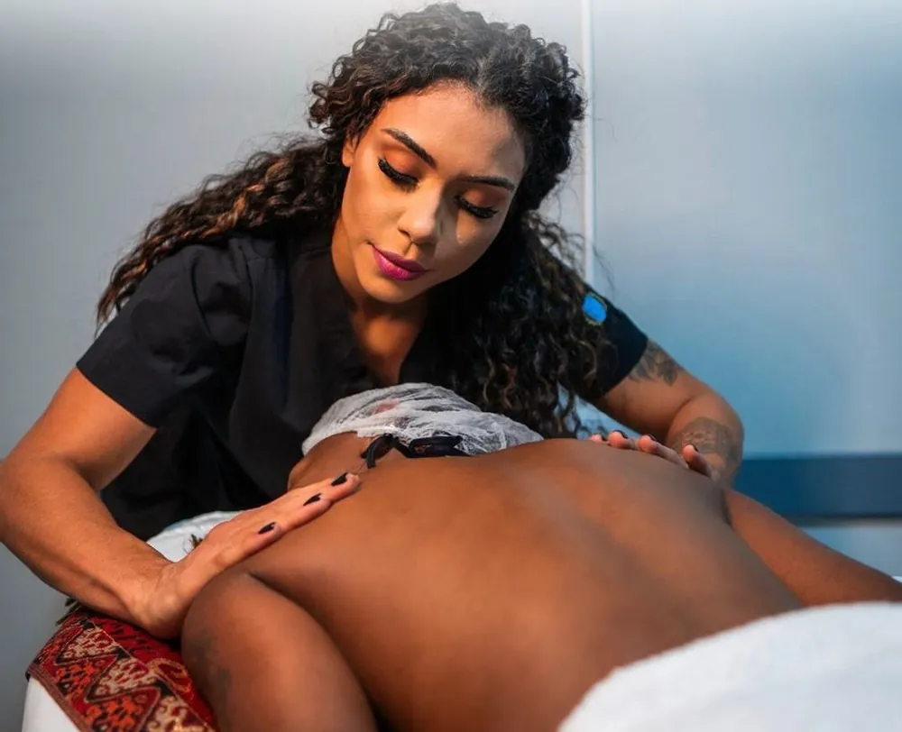

01
Massagem relaxante
Realizada em todo o corpo, com toques que estimulam sensações de bem-estar e de conexão consigo mesmo.
- Duração
- 45 a 50 min
- Manobras
- Amassamento, deslizamento, toques firmes e suaves
- Intensidade
- Suave e média
Benefícios: diminuição do estresse, aumento da imunidade, diminuição de tensões musculares, ansiedade e medo.
Por meio de uma anamnese, são avaliadas as condições de saúde e a necessidade de toques mais profundos em regiões ou pontos a serem tratados. O ambiente é seguro e climatizado, com iluminação agradável, música e sons que conduzem ao relaxamento.